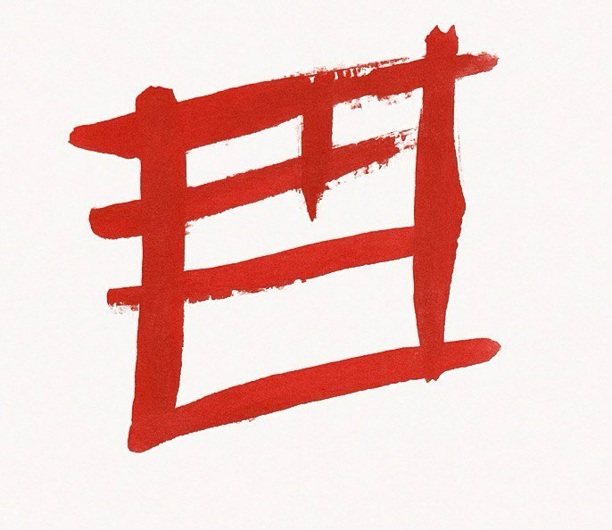
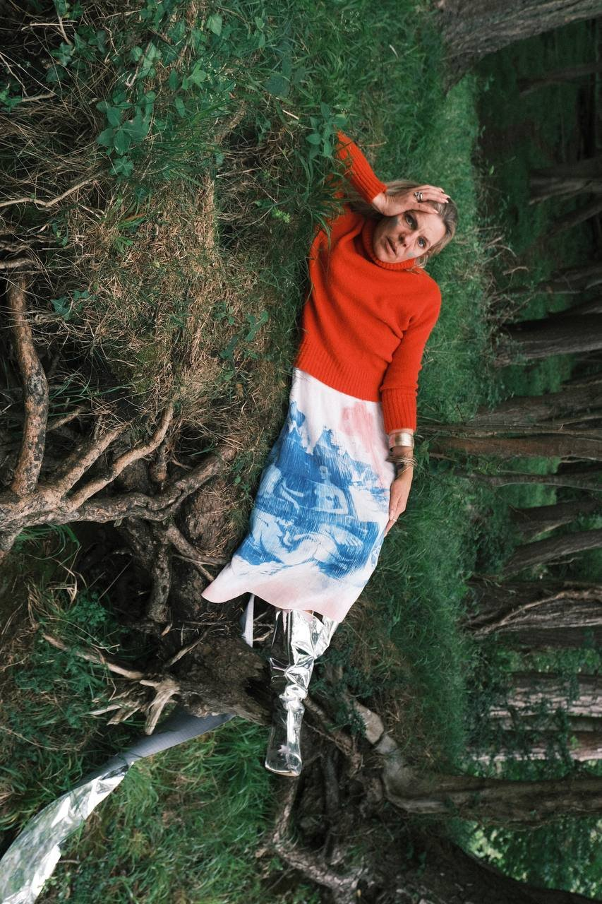
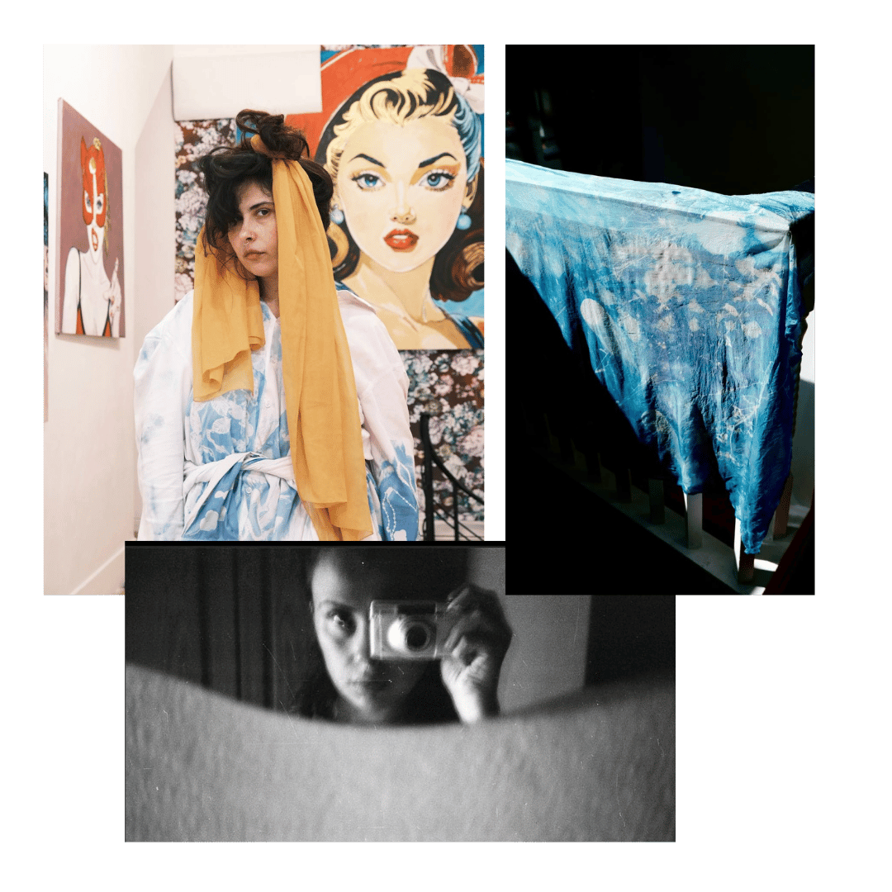

Light & image
Photography and printmaking as spaces to observe, remember and experiment.

Merve SagitWhere memory meets material.
And nature leaves its mark.


I’m Merve Sagit, an interdisciplinary conceptual artist based in Dublin. My practice moves between photography, printmaking, textiles and fashion.
I explore cultural identity, memory and ecology through patient, material-led experimentation — from cyanotype and lumen printing to bio yarn and reclaimed materials.
Inside the practicePhotography and printmaking as spaces to observe, remember and experiment.
Textile and fashion as a meeting point between personal stories and physical form.
Slow processes, recycled materials and a continuing conversation with ecology.